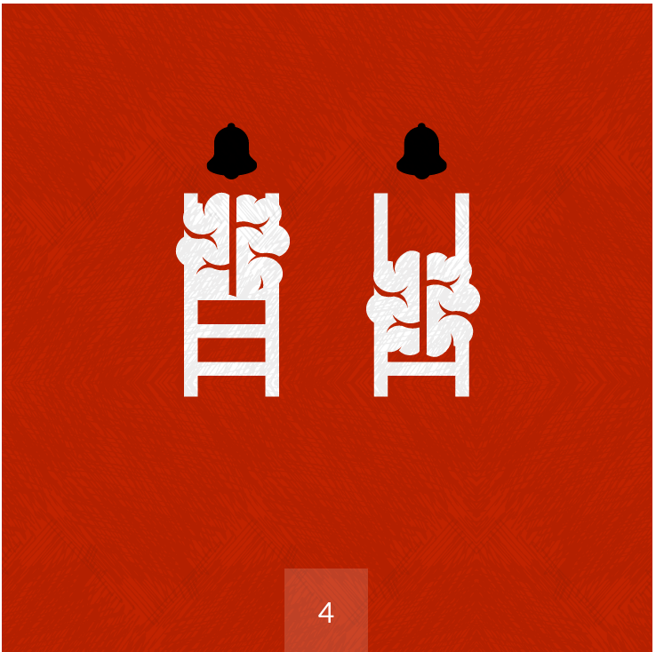
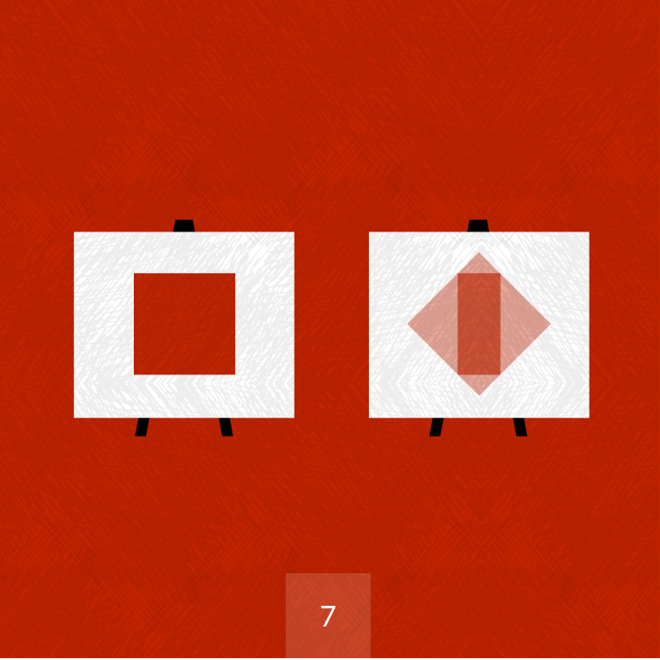
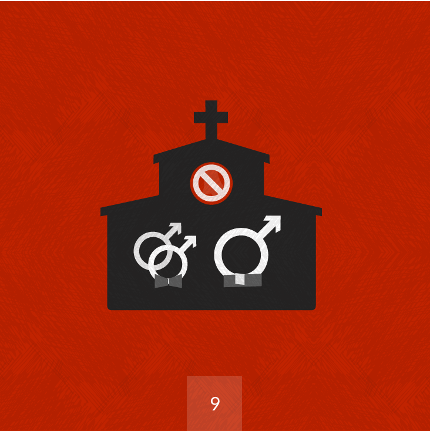

Revisionist History is a new podcast from Malcolm
Gladwell and Panoply Media. Each week for 10 weeks, Revisionist
History goes back and reinterpret something from the past: an
event, a person, an idea. Something overlooked. Something
misunderstood.
Because sometimes the past deserves a second chance.
Who is Malcom Gladwell?
Malcolm Gladwell is the author of five New York Times bestsellers —
The Tipping Point, Blink, Outliers, What the Dog Saw, and David and
Goliath. He has been named one of the 100 most influential people by
TIME magazine and one of the Foreign Policy’s Top Global Thinkers.
He has explored how ideas spread in the Tipping Point, decision making
in Blink, the roots of success in Outliers, and the advantages of
disadvantages in his latest book David and Goliath. In his latest
project, Revisionist History, Gladwell examines the way the passage of
time changes and enlightens our understanding of the world around
us.
Top Episodes
Carlos Doesn't Remember

Carlos is a brilliant student from South Los Angeles. He attends an exclusive private school on a academic scholarship. He is the kind of person the American meritocracy is supposed to reward. But in the hidden details of his life lies a cautionary tale about how hard it is to rise from the bottom to the top—and why the American school system, despite its best efforts, continues to leave an extraordinary amount of talent on the table.
Hallelujah

In 1984, Elvis Costello released what he would say later was his worst record: Goodbye Cruel World. Among the most discordant songs on the album was the forgettable “The Deportees Club.” But then, years later, Costello went back and re-recorded it as “Deportee,” and today it stands as one of his most sublime achievements.
“Hallelujah” is about the role that time and iteration play in the production of genius, and how some of the most memorable works of art had modest and undistinguished births.
Generous Orthodoxy

A pastor officiates at the wedding of his son—under ordinary circumstances, an affirmation of family and community. But what if the son is gay? And what if the pastor belongs to the most traditional of religious communities?
“Generous Orthodoxy” is the story of Chester Wenger, a 98-year-old Mennonite minister who chose to confront his own church over a question of deepest principle. It asks: What do you do when the institution that has defined your life comes between you and your family? Wenger offers all of us a master class in the art of dissent.